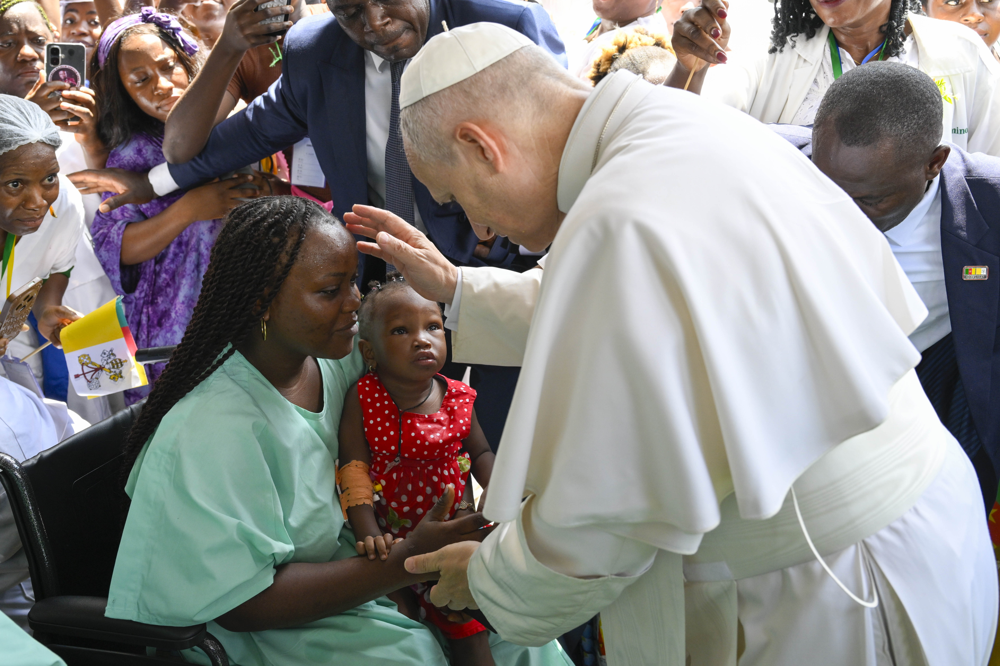
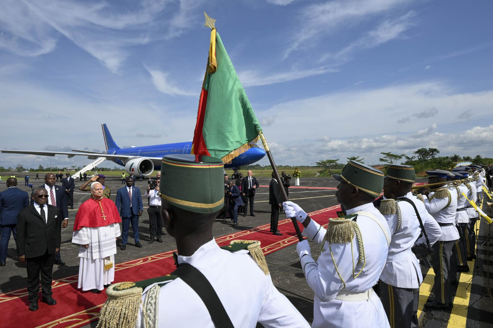
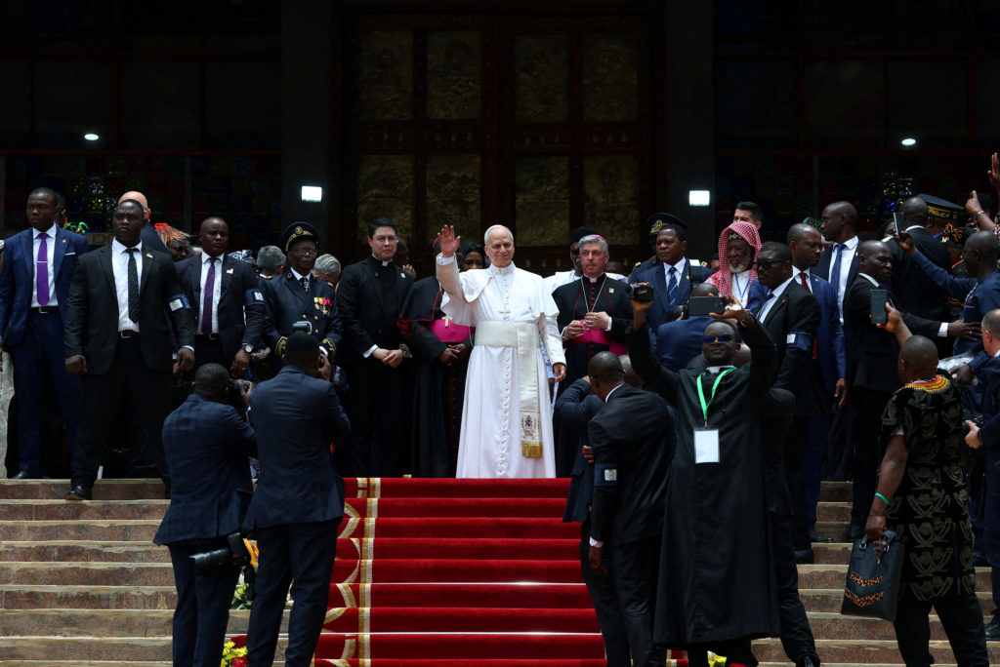
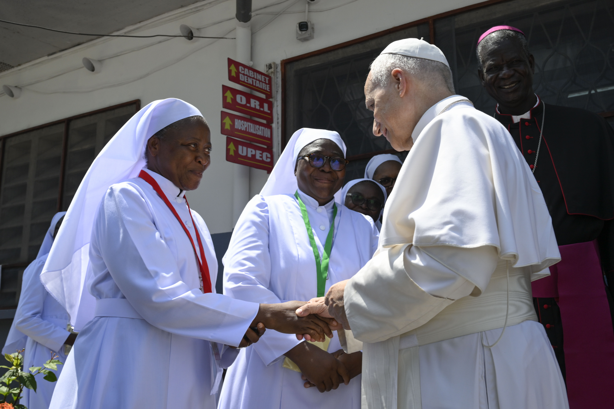
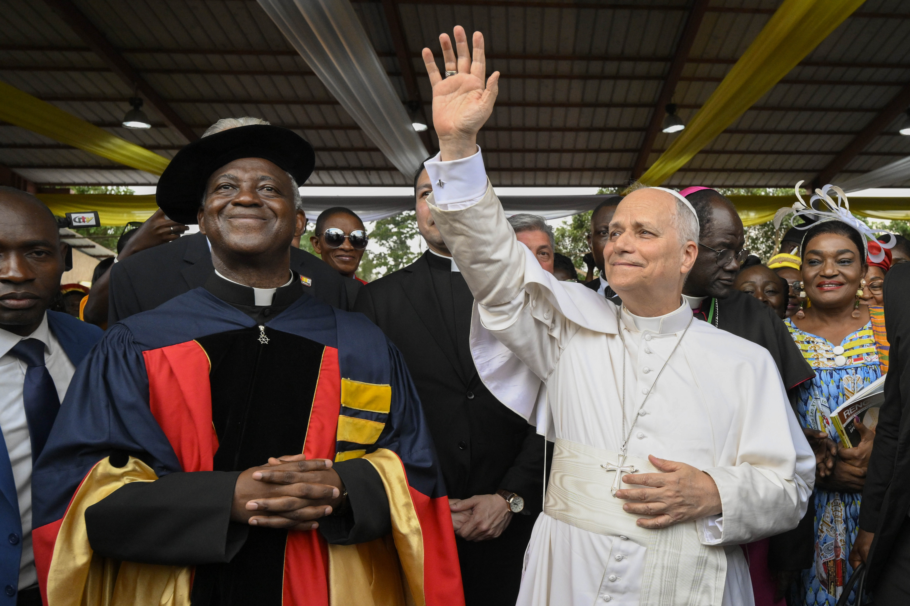
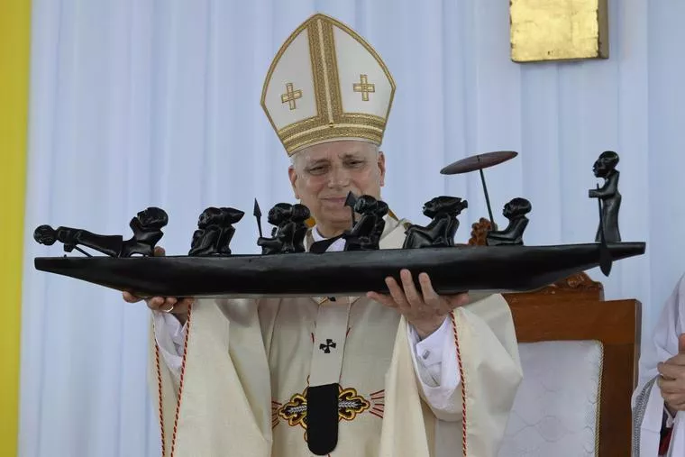
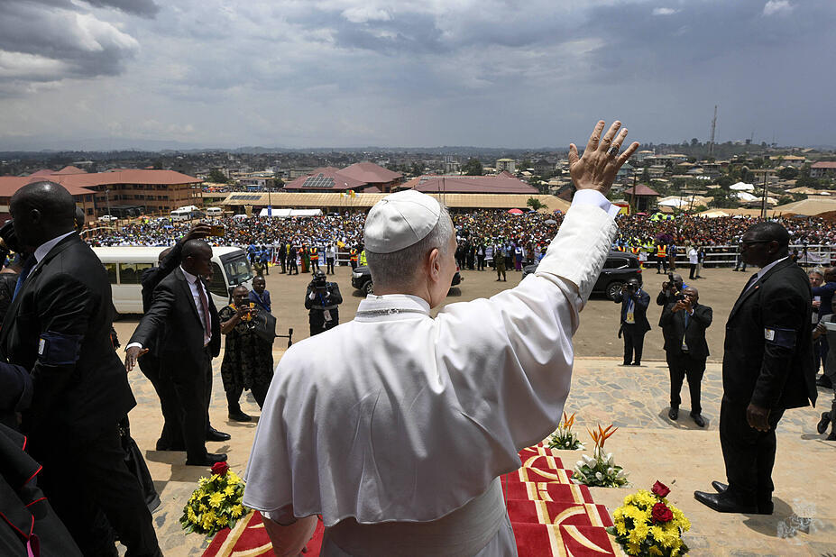

Chapter 05
Key Moments Gallery
Iconic scenes from four days that moved a nation. Each photograph captures a distinct dimension of this apostolic journey. Photos: Vatican Media / OSV News / Reuters.
Popemobile through Douala
Freeing a dove for peace · Bamenda
Japoma Stadium · Douala
Blessing a child · Douala

St. Paul Hospital · Douala

Pope Leo XIV arrives in Cameroon as 'a servant of dialogue' amid violent separatist conflict

Pope Leo promotes peace, condemns 'tyrants' ravaging the world during Cameroon visit
Popemobile through Douala
Freeing a dove for peace · Bamenda
Japoma Stadium · Douala
Blessing a child · Douala
St. Paul Hospital · Douala
Pope Leo XIV arrives in Cameroon as 'a servant of dialogue' amid violent separatist conflict
Pope Leo promotes peace, condemns 'tyrants' ravaging the world during Cameroon visit

Greeting sisters · Douala
Greeting a student · UCAC

UCAC crowds · Yaoundé

Receiving a sculpture · Douala
Arrival · April 15
Pope Leo appears for Africa tour after Trump criticism

Leo in Bamenda: “Today, not tomorrow, is the right time.”
Greeting sisters · Douala
Greeting a student · UCAC
UCAC crowds · Yaoundé
Receiving a sculpture · Douala
Arrival · April 15
Pope Leo appears for Africa tour after Trump criticism
Leo in Bamenda: “Today, not tomorrow, is the right time.”
Photos: Vatican Media / OSV News / Guglielmo Mangiapane (Reuters) | Full gallery →
Holy Mass — Douala
LIVE · April 17, 2026Full Eucharistic celebration from Japoma Stadium, Douala — 120,000 faithful. Broadcast live by EWTN Vatican.

Source: EWTN Vatican — YouTube ↗